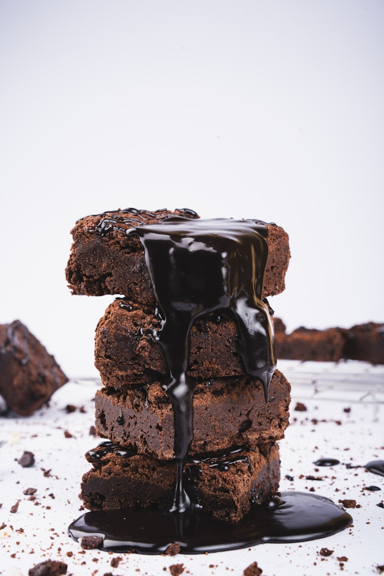

My favorite brownie recipe
by
Madison WilliamsWelcome to my Blog! If you're looking for rich, chocolatey, fudgy brownies, this simple recipe will become your go-to. These brownies come together quickly with basic pantry ingredients and deliver a perfect balance of chewy edges and gooey centers.
Ingredients
- 1/2 cup (1 stick) unsalted butter, melted
- 1 cup granulated sugar
- 2 large eggs
- 1 teaspoon vanilla extract
- 1/3 cup unsweetened cocoa powder
- 1/2 cup all purpose flour
- 1/4 teaspoon salt
- 1/4 teaspoon baking powder
- Chocolate chips
Instructions
- Preheat your oven to 350°F. Grease or line an 8x8-inch baking pan with parchment paper.
- In a medium bowl, mix melted butter and sugar until well combined.
- Beat in the eggs one at a time, then stir in the vanilla.
- Sift in the cocoa powder, flour, salt,chocolate chips, and baking powder. Mix until just combined—do not overmix.
- Pour the batter into the prepared pan and spread evenly.
- Bake for 20 to 25 minutes, or until a toothpick inserted in the center comes out with a few moist crumbs.
- Let cool before cutting into squares.
Enjoy!
My top 3 Desserts Ranked
by
Madison Williams
I love to bake, but there are three desserts that I absolutely
| Dessert | Reasoning | Scale from 1-10 |
|---|---|---|
| Brownies | Super Chocolatey | 9.9/10 |
| Cookies | Yummy but sometimes too crispy | 7/10 |
| Donuts | Good but kinda boring | 6.5/10 |